总览地图强骨架，多路径
强骨架固定公共底线，松适配保留选择，快反馈让试点可修正。
11.413 km²临时几何面积
17.48%绿色参考
0.735%公共空间参考
64集合轮数
6持续候选
8分歧候选
上方两项比例的分母是临时 SITE-001 面积 11,412,825.386 平方米，百分比按 ROUND_HALF_UP 保留两位小数。完整的分母差额披露见核心指标。持续候选与分歧候选按入选频率划分：频率≥0.70 为持续，0.35≤频率<0.70 为分歧；频率只能取 64 轮中的整数份额，因此最小可达频率分别是 45/64 = 0.703125 与 23/64 = 0.359375。
三层范围三层不是三次放大
约43.6 km²
统筹研究：产业、机构、人才与生活网络
约11.4 km²
总体设计：参考结构、接口与可复算图层
约368.4 ha
重点区域：差异任务、90天试点、停止恢复
完整分区，不制造控制值
12个共享边界单元100%覆盖临时工作框；拓扑完整不等于法定适宜。
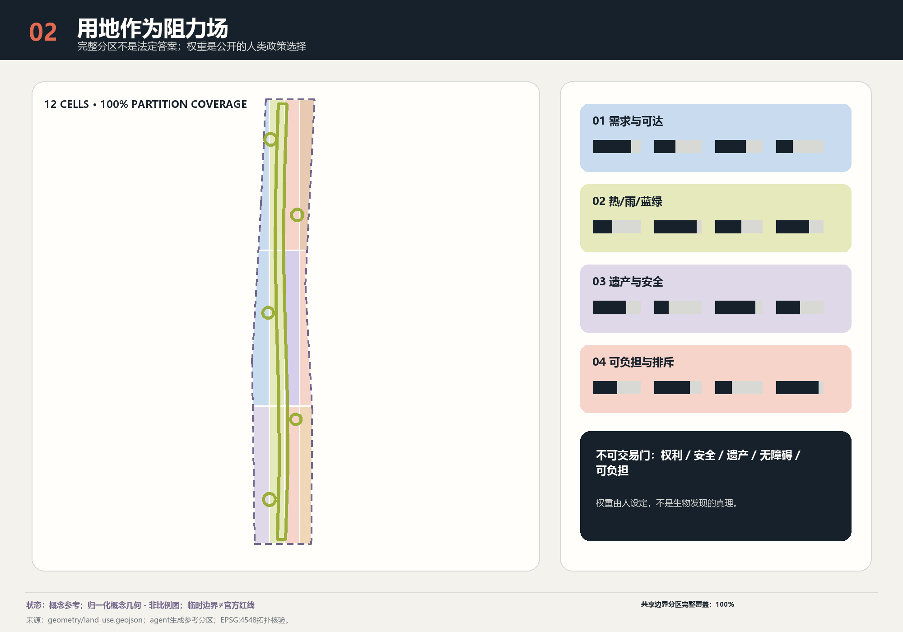
geometry/land_use.geojson · 共享边界分区覆盖 100%（临时概念几何）
重点区域三区，三种不可互换的任务
每个重点区回答一个不同的问题，因此构件、路径、冬季与维护安排都不相同。全部构件与路径均为概念建议，未获授权、未获资金，落地前须经专业与行政审查。
 三处 polygon 为临时研究范围，不是官方边界。大钟寺范围受 Issue #1029 质疑，按无地理参照发布：其位置不承载任何主张。
三处 polygon 为临时研究范围，不是官方边界。大钟寺范围受 Issue #1029 质疑，按无地理参照发布：其位置不承载任何主张。众智园AI自主创新加速区
角色: 受控测试与治理验证 · 公告面积: 192.1 ha · Lab 1
本区回答一个问题：一台低速机器在有人的街道上被允许做什么，由谁停下它，停下之后谁来修。它是三个实验室里唯一进行受控设备测试的场地。
众智园AI自主创新加速区 · 构件
众智园AI自主创新加速区 · 提议的无障碍连续路径
冬季运行: 冬季测试时段缩短并优先保证主链与旁路的清扫与除冰；主链在任何测试安排下都不得因结冰或积雪封闭而无替代路径。除冰材料的选择与频次写入维护表，不写入本方案的性能声明。
维护责任: 每台测试设备对应一名具名维护者与一个备件位；维护者缺位即停止该设备的测试资格。维护义务、年度金额与恢复资金全部依赖 D12，未取得前不激活。
Phase 1 概念体量: 一处 90 天可逆通行试点：可搬移护栏、地面不打孔、结束时按拆卸清单恢复原状并留存恢复验证记录。
ENV-ZY-01可逆未授权未拨款受阻于: D10,D12图版
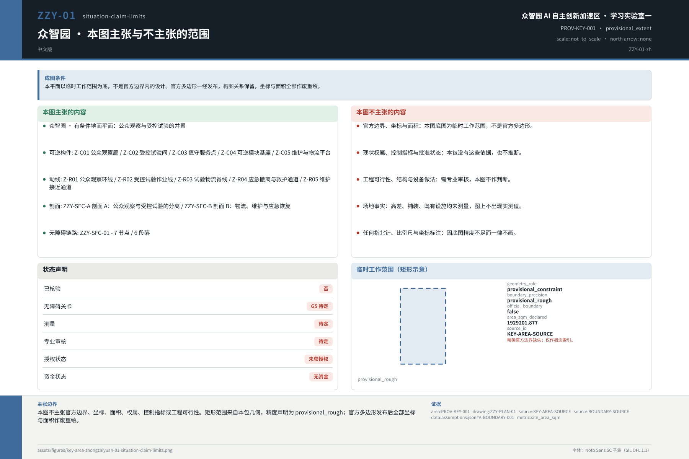
众智园 · 本图主张与不主张的范围 — 本平面以临时工作范围为底，不是官方边界内的设计。官方多边形一经发布，构图关系保留，坐标与面积全部作废重绘。
图面说明
本图是众智园五张图纸的入口。它先说明这套图的底图是临时工作范围而非官方边界，再把主张与不主张分列并置，使读者在读平面之前就知道哪些内容有依据、哪些内容只是提案本身的提议。六项状态全部为未核验、未授权、无资金，图上不出现任何指北针或比例尺。
原图 PNG · ZZY-01 · 1800 × 1200 px
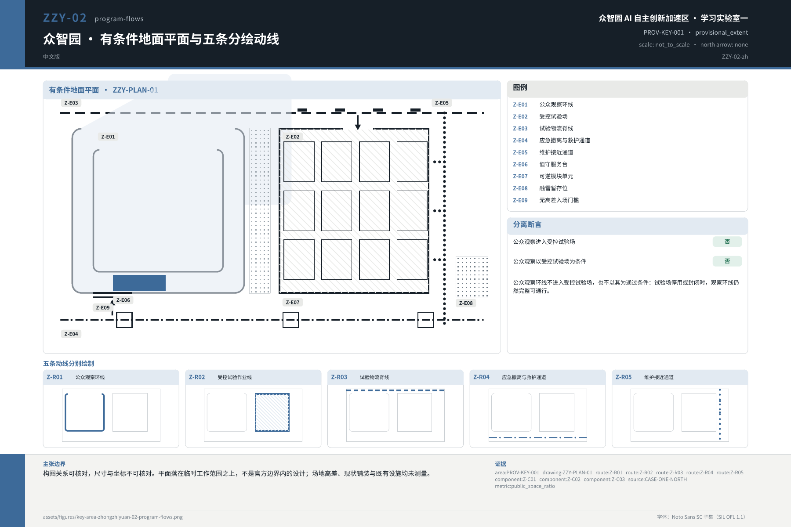
众智园 · 有条件地面平面与五条分绘动线 — ZZY-PLAN-01：9 个构成元素，剖切号 A→ZZY-SEC-A B→ZZY-SEC-B。
图面说明
这是众智园的主图。公众观察环线是一条闭合线，既不进入受控试验场，也不以其为通过条件：试验场停用时环线仍然完整。分隔带被明确画成一条不属于任何一方的加密带，两侧没有共用的边或门槛。维护点线始终在试验场之外，从外侧到达每一个模块面。下方五个小图把五条动线逐条抽出，使"分别绘制"是可核对的事实而不是说明文字。
原图 PNG · ZZY-02 · 1800 × 1200 px
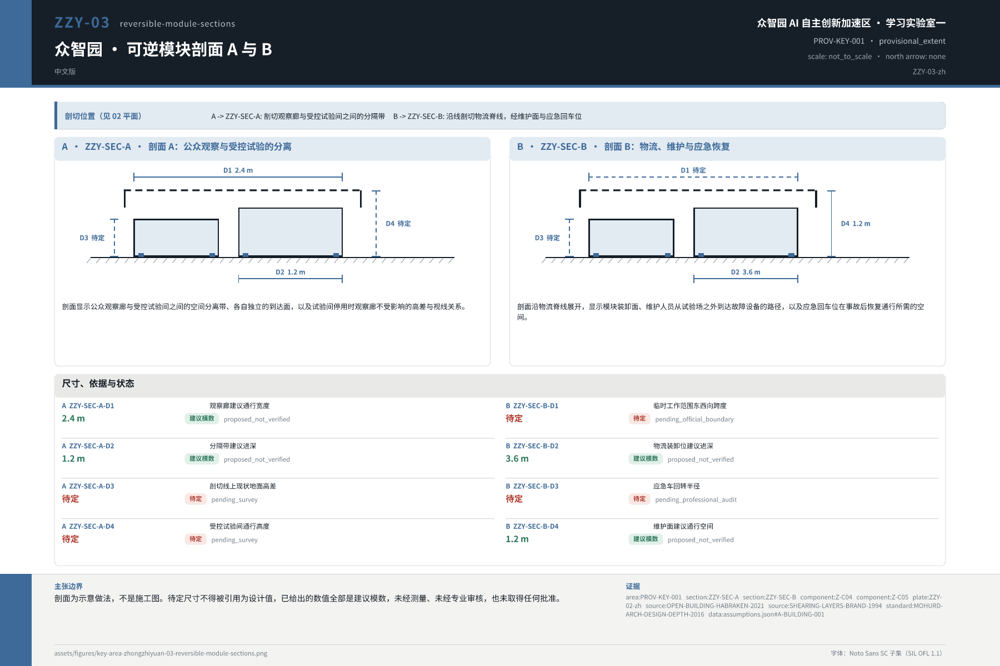
众智园 · 可逆模块剖面 A 与 B — ZZY-SEC-A / ZZY-SEC-B：共 8 项尺寸，4 项 proposed_module（以米计、未经核验）、4 项 pending（以米计、取值留空、附复算触发条件）。
图面说明
剖面的作用是把"可逆"变成可以检查的做法。八个尺寸中只有四个有数字，且全部标注为建议模数；另外四个分别等待场地测量、官方边界与专业审核，没有数字，图上画成虚线尺寸并写明待定，绝不给出一个看起来像测量结果的数。这样，读者可以判断哪些数字是提案的选择，哪些是尚未获得的事实。
原图 PNG · ZZY-03 · 1800 × 1200 px
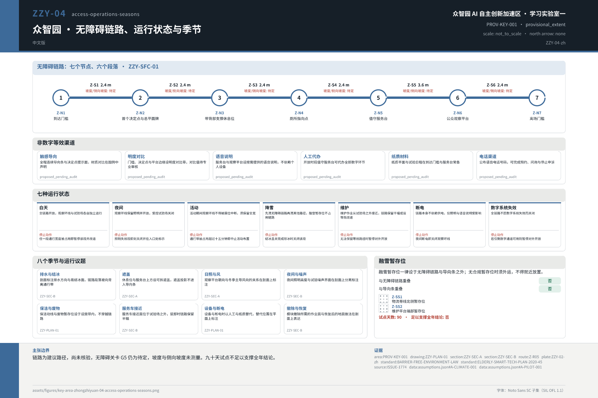
众智园 · 无障碍链路、运行状态与季节 — ZZY-SFC-01：7 个节点 / 6 段，6 类等效渠道，7 种运行工况；无障碍闸口 G5:pending；试点 90 天，sufficient_for_year_round 为 false。
图面说明
无障碍不是一处坡道，而是一条从到达到离场都不中断的链路。本图把链路画成七个节点与六个段落，逐段标注通行宽度，并把坡度与侧向坡度留白为待定，因为地面高差尚未测量。七种运行状态说明夜间、活动、降雪、维护、断电与数字系统失效时哪些路径仍然可用，以及何时必须停止；六种非数字等效渠道保证不使用任何设备的人也能完成全部环节。
原图 PNG · ZZY-04 · 1800 × 1200 px
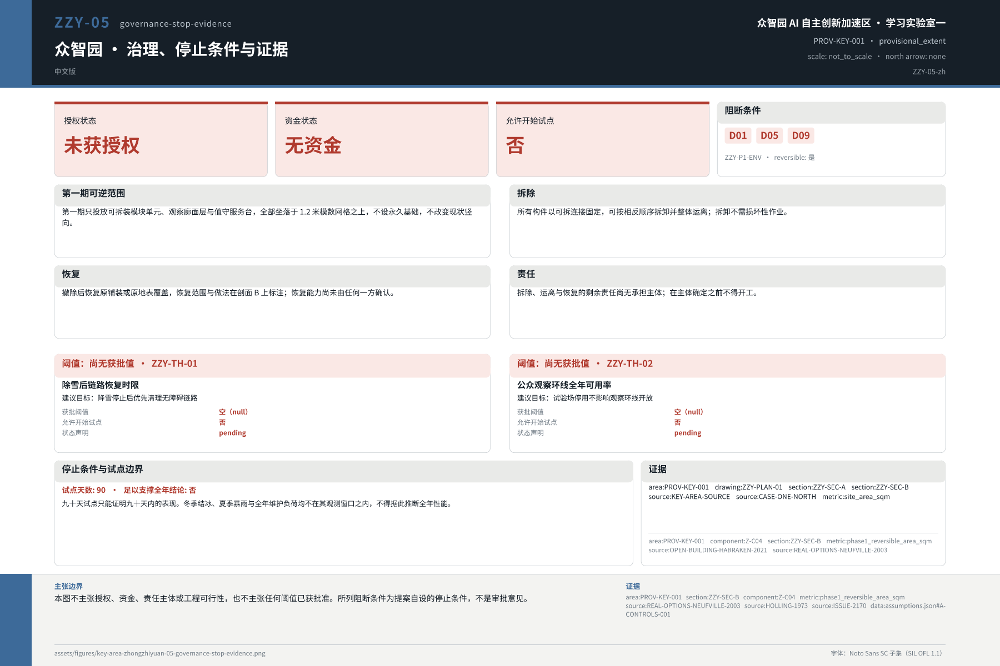
众智园 · 治理、停止条件与证据 — ZZY-P1-ENV：not_authorized、unfunded，受 D01 D05 D09 阻断；2 项季节阈值（ZZY-TH-01 ZZY-TH-02）的 approved_threshold 均为空、pilot_start_allowed 均为 false。
图面说明
这张图记录的是本提案尚不能做什么。第一期只投放可拆装构件，全部以可拆连接固定，可按相反顺序拆卸整体运离；但恢复能力尚未由任何一方确认，拆除、运离与恢复的剩余责任也尚无承担主体。两项阈值都只有建议目标，获批阈值为空，允许开始试点为否。三项阻断条件在解除之前，本片区不得开工。
原图 PNG · ZZY-05 · 1800 × 1200 px
北京AI原点社区
角色: 近校转化与居民共同校正 · 公告面积: 104.3 ha · Lab 2
本区回答另一个问题：住在旁边的人如何改正一个他们没有参与设计的系统。它不做设备测试，做的是登记、申诉与回执。
北京AI原点社区 · 构件
北京AI原点社区 · 提议的无障碍连续路径
冬季运行: 冬季把清扫与除冰顺序倒过来：先清居民日常段与夜间优先段，再清示范性路段。校正桌与申诉信箱在冬季保持室内或有遮蔽的位置，不因季节中断非数字通道。
维护责任: 登记台与回执板由具名机构按周维护，缺维护即按公示规则暂停对应场景的登记资格。相关人员、预算与期限依赖 D12 与 D16。
Phase 1 概念体量: 一处可逆的首层共享工作间与登记台组合：只使用既有首层空间，家具与隔断可拆卸，结束时不留下不可复原的改动。
ENV-AO-01可逆未授权未拨款受阻于: D04,D06,D12图版
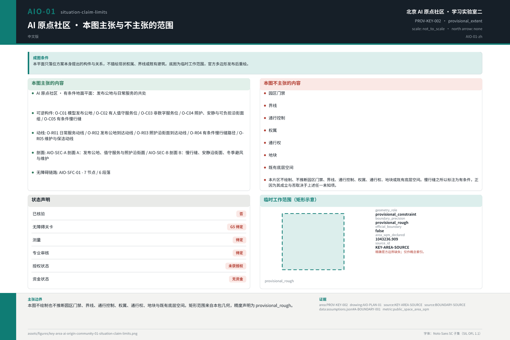
AI 原点社区 · 本图主张与不主张的范围 — 本平面只落位方案自己提出的构件与关系，不描绘现状权属、界线或既有房屋。底图为临时工作范围，官方多边形发布后重绘。
图面说明
这个片区的困难在于：它提出的内容大多落在他方的地面上。因此本图先把七项不主张的内容单独列成标签：门禁、界线、通行控制、权属、通行权、地块与既有底层空间，全部不绘制也不推断。慢行缝之所以在平面上标注为"有条件"，正是因为它能否成立取决于这七项之中的任何一项。
原图 PNG · AIO-01 · 1800 × 1200 px
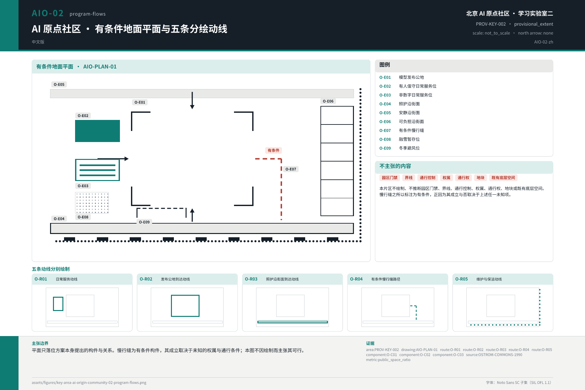
AI 原点社区 · 有条件地面平面与五条分绘动线 — AIO-PLAN-01：9 个构成元素，剖切号 A→AIO-SEC-A B→AIO-SEC-B。
图面说明
发布公地被画成没有围合线的开放图形，因为围合线就是一种通行控制的主张，而本片区不主张通行控制。有人值守服务位与非数字服务位分别绘制，保证不使用任何设备的人有完整的一条办理路径。三条沿街面各自承担照护、安静与可负担三种要求，并在图上分别标注。慢行缝画成虚线并加"有条件"标签，只画在方案本身创造的地面上。
原图 PNG · AIO-02 · 1800 × 1200 px
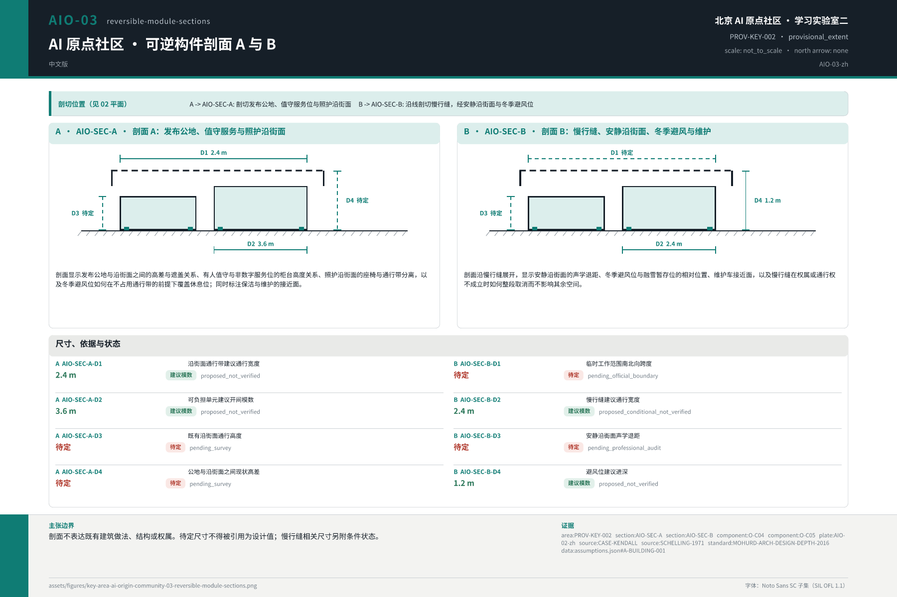
AI 原点社区 · 可逆构件剖面 A 与 B — AIO-SEC-A / AIO-SEC-B：共 8 项尺寸，4 项 proposed_module（以米计、未经核验）、4 项 pending（以米计、取值留空、附复算触发条件）。
图面说明
两个与既有沿街面有关的尺寸没有数字：既有沿街面通行高度与公地和沿街面之间的现状高差，都必须实地测量后才能确定。安静沿街面的声学退距同样留白，等待专业审核；临时工作范围的南北向跨度等待官方边界。给出数字的四个尺寸全部是 2.4 米与 3.6 米一类的建议模数，标注清楚以免被读作现状。
原图 PNG · AIO-03 · 1800 × 1200 px
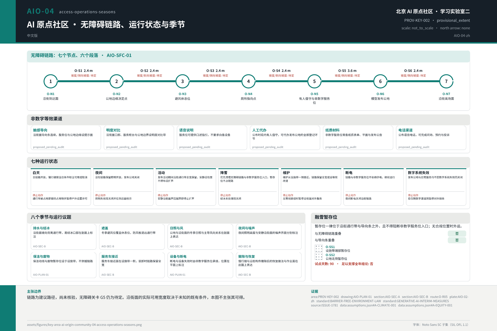
AI 原点社区 · 无障碍链路、运行状态与季节 — AIO-SFC-01：7 个节点 / 6 段，6 类等效渠道，7 种运行工况；无障碍闸口 G5:pending；试点 90 天，sufficient_for_year_round 为 false。
图面说明
这个片区的链路穿过公地边缘与三条沿街面，因此段落的通行宽度必须在户外座椅、展示牌与临时展位之间保住。运行状态里有一条对本片区特别重要：数字系统失效时全链路不得关闭，非数字渠道全程可用，否则这个以 AI 原点为名的片区就会把最需要它的人排除在外。
原图 PNG · AIO-04 · 1800 × 1200 px
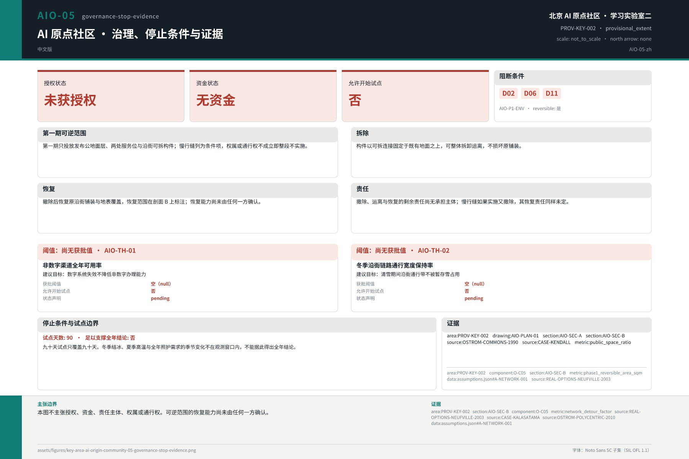
AI 原点社区 · 治理、停止条件与证据 — AIO-P1-ENV：not_authorized、unfunded，受 D02 D06 D11 阻断；2 项季节阈值（AIO-TH-01 AIO-TH-02）的 approved_threshold 均为空、pilot_start_allowed 均为 false。
图面说明
本片区的第一期完全落在可逆范围之内，但它的阻断条件与众智园不同：这里的关键未知是权属与通行条件，而不是受控试验的安全边界。两项阈值分别针对非数字渠道的全年可用率与冬季沿街链路的通行宽度保持率，都只有建议目标，没有获批值，也不允许据此开始试点。
原图 PNG · AIO-05 · 1800 × 1200 px
大钟寺AI产业聚集区
角色: 到达、维修与城市服务界面 · 公告面积: 72 ha · Lab 3 · 无地理参照
本区回答第三个问题：当位置本身还不能确认时，还能负责任地设计什么。答案是一组不依赖坐标的性能模块：到达、维修、服务与等候。
无地理参照Issue #1029 对大钟寺临时 polygon 与车站的位置关系提出质疑。本方案因此不把大钟寺作为站点或已定位片区处理：不画出入口、道路、过街、地块、距离，也不声称与任何车站存在正向空间关系。该片区只以非定位的性能任务表达。
大钟寺AI产业聚集区 · 构件
大钟寺AI产业聚集区 · 提议的无障碍连续路径
冬季运行: 冬季在遮蔽等候模块加设可拆卸挡风面，并把服务柜台的排队序列移入有顶范围。因为本区不作定位，冬季措施只写模块自身的性能，不写任何街道或站前空间的处理。
维护责任: 维修与备件模块是本带维护能力的实际所在，其配件清单、维护者名册与培训记录按季更新。所有维护义务与资金状态依赖 D12，未取得前保持 unfunded。
Phase 1 概念体量: 一组可逆的到达与维修模块：全部构件可拆卸、可搬移，结束时逐件撤除。不作定位，落位待官方 polygon 取得后确定；模块与既有建造、竖向及疏散条件如何相接尚未勘测。
ENV-DZ-01可逆未授权未拨款受阻于: D02,D03,D06,D12图版
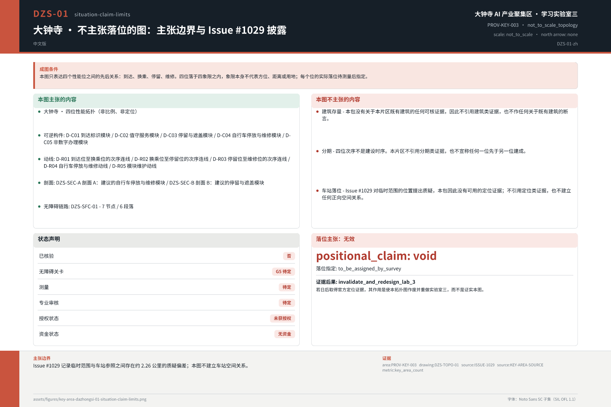
大钟寺 · 不主张落位的图：主张边界与 Issue #1029 披露 — 本图只表达四个性能位之间的先后关系：到达、换乘、停留、维修。四位落于四象限之内，象限本身不代表方位、距离或用地；每个位的实际落位待测量后指定。Issue #1029 记录临时范围与车站参照之间存在约 2.26 公里的质疑偏差；本图不建立车站空间关系。
图面说明
本片区没有官方几何，Issue #1029 记录的质疑偏差约为 2.26 公里。在这种情况下，任何让图纸更易读的做法——一条参照线、一处方位、一个距离——同时也会变成一个关于位置的主张。因此这一组图纸把落位主张整体声明为无效，并主动排除三类本可引用的证据，说明排除理由，使读者能判断这不是遗漏而是判断。
原图 PNG · DZS-01 · 1800 × 1200 px
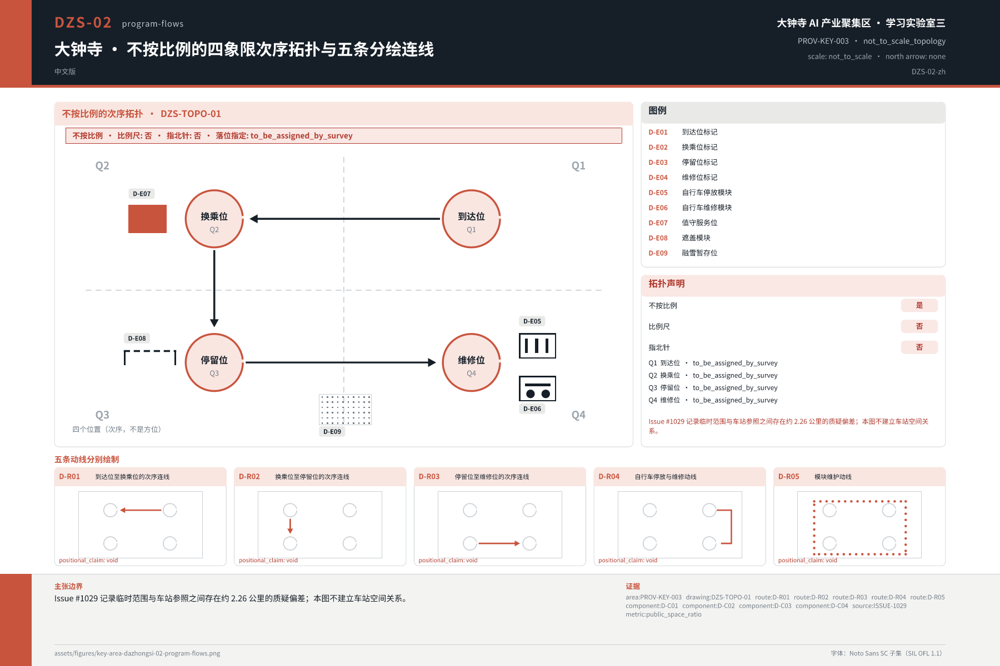
大钟寺 · 不按比例的四象限次序拓扑与五条分绘连线 — DZS-TOPO-01：9 个构成元素，剖切号 A→DZS-SEC-A B→DZS-SEC-B。
图面说明
象限在这里是次序，不是方位。四个位置的相对次序——先到达，再换乘，然后停留，最后维修——是这套图纸能主张的全部内容；它们与任何实际地点、方向或距离都没有关系，落位状态一律记为 to_be_assigned_by_survey。图上没有底图、没有多边形、没有比例尺、没有指北针，也没有任何一条线声称本身对应现场的某一条。自行车停放与维修被单独画出，因为它们是本片区最不该被省略的日常内容。
原图 PNG · DZS-02 · 1800 × 1200 px
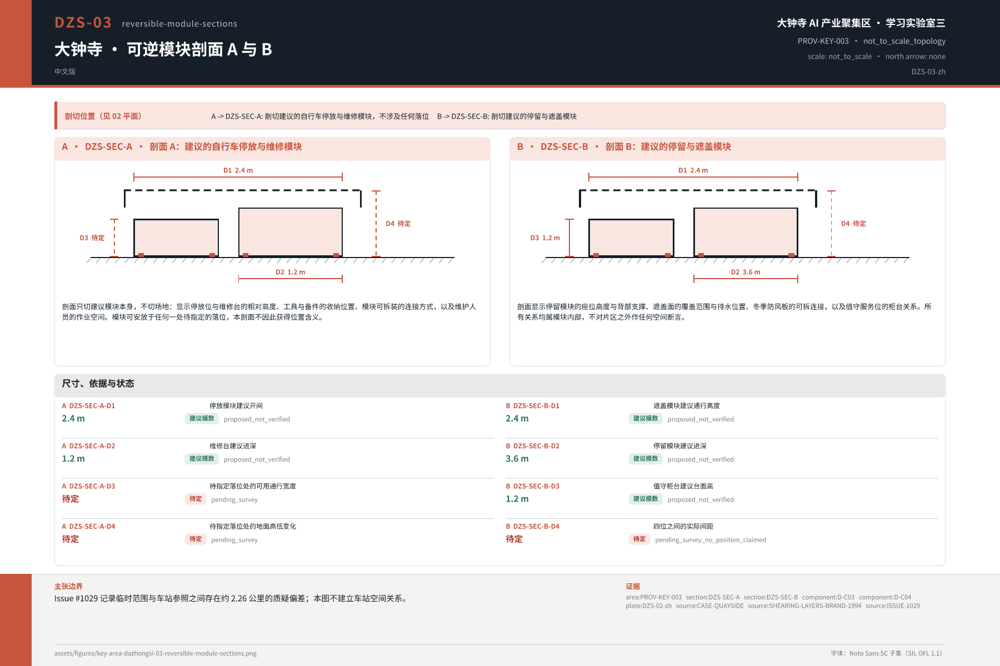
大钟寺 · 可逆模块剖面 A 与 B — DZS-SEC-A / DZS-SEC-B：共 8 项尺寸，5 项 proposed_module（以米计、未经核验）、3 项 pending（以米计、取值留空、附复算触发条件）。
图面说明
这两张剖面只表达模块本身：座位高度、背部支撑、遮盖面的覆盖范围与排水位置、自行车维修位所需的通行空间。需要参照现场才能确定的量，一律留白为待定。剖面上没有地面标高、没有既有做法，也没有任何一处与周边环境的相对关系，因为这种关系本片区无权主张。
原图 PNG · DZS-03 · 1800 × 1200 px
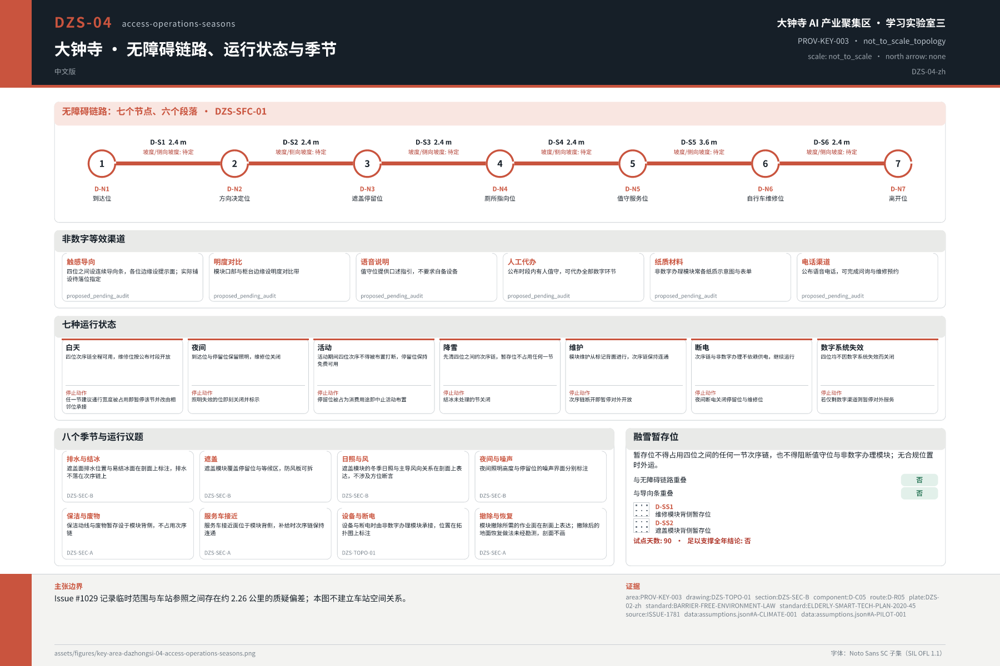
大钟寺 · 无障碍链路、运行状态与季节 — DZS-SFC-01：7 个节点 / 6 段，6 类等效渠道，7 种运行工况；无障碍闸口 G5:pending；试点 90 天，sufficient_for_year_round 为 false。
图面说明
链路在这里同样只是次序：七个节点按到达、决定、休息、厕所指向、值守服务、主要内容、离场排列，段落之间的通行宽度是建议模数，坡度与侧向坡度因无处可测而留白。这正是本片区最容易被误读的地方——链路可以在落位确定之前设计，但不能在落位确定之前被验证。
原图 PNG · DZS-04 · 1800 × 1200 px
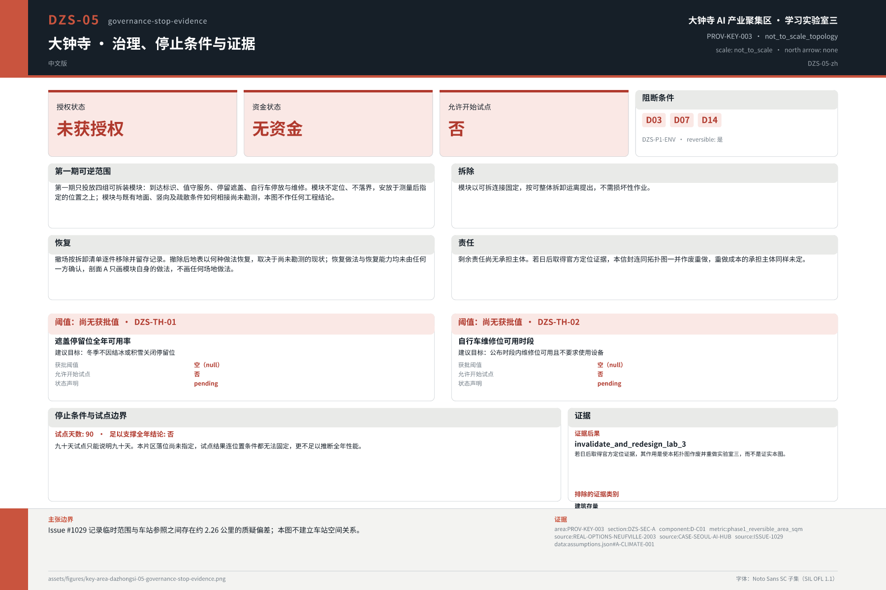
大钟寺 · 治理、停止条件与证据 — DZS-P1-ENV：not_authorized、unfunded，受 D03 D07 D14 阻断；2 项季节阈值（DZS-TH-01 DZS-TH-02）的 approved_threshold 均为空、pilot_start_allowed 均为 false。
图面说明
这张图记录了证据规则的方向。若官方证据落地，本组图纸不会因此被确认，而是整体作废并重做——这是一个提前写下的承诺，用来防止事后把新证据读成对旧图的支持。三项阻断条件、两个未获批阈值与未指定的落位共同构成本片区的停止条件：在它们解除之前，这里不存在可以开始的工作。
原图 PNG · DZS-05 · 1800 × 1200 px
交通慢行持续是问题，不是路线批准
持续边是可供专业研究的候选，分歧边成为明确的设计问题，被规则排除的边保留在审计记录中。任何试点之前，人工复核必须先比较可达性、安全、遗产、成本、运行与在地体验。
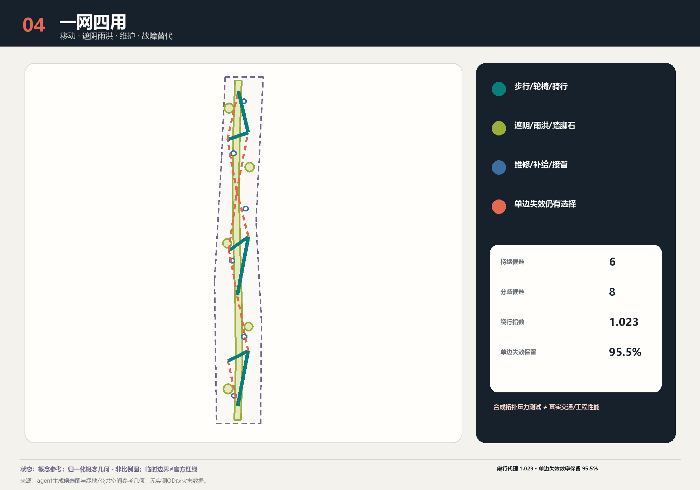
归一化拓扑压力测试。模型输出不是交通证据，也不是工程证据。
蓝绿公共空间一网四用
移动、遮阴雨洪、维护和失效替代同时被看见。指标是合成拓扑压力测试，不是真实交通或工程性能。
可达与包容
以连续、易读、无台阶的公共路径作为设计检验，同时保留非数字导引渠道。
遮阴与雨洪
遮阴、降温与雨洪功能一并检验；水文与种植须经具备资质的专业人员确认。
记忆与生境
让遗产解释、生物多样性与日常使用可见，但不把代理评分当成法定保护主张。
维护与安全失效
指定维护责任人、列出修缮预算、记录投诉，并在试点表现不佳时保留恢复路径。
十个场景，一份治理合同
S01无障碍慢行
S02京张文化解释
S03公共服务导航
S04健康服务导引与转介
S05法律与合规初筛
S06企业服务副驾
S07低速配送与维修
S08热浪遮阴调度
S09活动日人流辅助
S10申诉与模型退休
每个场景登记同样六项：位置类型、最少数据、人工复核、非数字替代、责任运营方、停止规则。这些卡片是概念性的服务规格，不是部署授权。
不可交易门安全 · 权利 · 遗产 · 可负担 · 无障碍 · 隐私 · 人工复核
每一道门都是独立否决权：加权得分再高也不能覆盖其中任何一道。
建筑核验后保留，轻改优先，可逆增补
待专业判断
没有地块、权属、结构与文保证据，不作拆除决定。
先证据，后空间，再制度
P00 共同证据底图P01 三处90天可逆通行试点P02 六座城市客厅P03 京张记忆编译站P04 AI原点开放登记台P05 模型公地与申诉桌P06 众智园受控机器人测试P07 大钟寺到达与维修模块组P08 绿脊遮阴与雨洪样段P09 开源企业服务台P10 维护者培训与备件库P11 分歧图谱年度复算
Phase 0 核验证据与问责；Phase 1 做90天可逆小试；Phase 2 跨至少两季学习；Phase 3 只有通过人类、专业、财务、维护与公共利益审查才可能制度化。全部12项均未授权、未拨款。
核心指标模型稳定性不是公共合法性
64 次固定种子运行显示候选拓扑对已公开代理权重的响应。持续性、绕行与单边失效结果只支持在本概念模型内部作比较，不证明需求、容量、可建造性、安全或社会同意。
零抖动对照：把每条边的 jitter 置零后重跑同一组 64 个种子，24 条候选边中有 8 条改变状态，最大频率变化 0.546875；持续边由 6 条变为 11 条，分歧带变为 0 条，持续图仍然连通。分歧带是这套判据在带抖动条件下的产物，不是被观测到的城市争议；jitter 是声明的扰动项，不是测量误差。本记录是计算透明性材料，不是设计结论。它不能证明任何一条走廊应当建设。
分母与取整规则在此写明，不留隐含约定。本页所有比例的唯一分母是由提交几何复算的临时 SITE-001 面积 11,412,825.386 平方米，即 1,141.3 公顷；官方公告发布的总体设计范围面积为 11,400,000 平方米，即 11.4 平方公里。两者相差 12,825.386 平方米，即 1.28 公顷，占官方值的 0.1125%；该差额是临时工作 polygon 与官方文字面积之间的记账差，不是实测边界差异。所有百分比按 ROUND_HALF_UP 保留两位小数，所有公顷显示保留一位小数。同一分子在两套分母下的结果都写出：绿色参考 199.5 公顷为 17.48%（临时）与 17.50%（官方），相差 +0.02 个百分点；公园绿地与开敞空间用地（代码 1401，320.4 公顷）为 28.07%（临时）与 28.11%（官方），相差 +0.03 个百分点。发布面一律采用临时分母口径，两套口径不得混用。
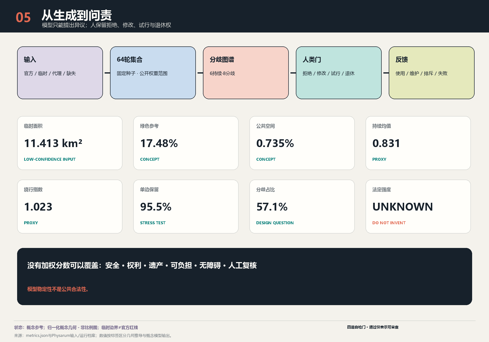
指标按证据类型标注：几何推得值、政策代理值与缺失的官方控制值不得混为一谈。
任务覆盖公告、agent 任务与专业深度可追溯
下表四行的数量全部由构建脚本从对应记录现算，不由人重打；标为资料缺口的条目照实计入，不并入已回应。
区域协同五个协同对象，只写可提问的部分
任务书的“区域协同性”评审维度点名五个对象。本表逐个只回答四件事：可能的关系、仍需的证据、拟议审核路径（待确认）、以及主张限度。本表不记录任何既有协议、线路、投资、承诺或实施事实，也不指定任何机构的受理职责。
brief/site-package/agent_taskbook.json#/review_dimensions/3 · taskbook_naming_only
任务书只发布中文名称，因此五个对象的英文名为工作译名，不是官方英文名。
自检状态四道门，只有一种含义：可审查
CHK-01 确定性记录
必需文件、标识符、哈希与声明关系均可由机器校验。
CHK-02 空间结构
提交的几何可被解析、量算，并按声明的拓扑关系校验。
CHK-03 离线视觉审阅
方案可在无远程脚本、字体、瓦片、追踪器、表单与网络请求的条件下阅读。
CHK-04 证据分级
官方、临时、概念、代理与缺失证据在版面上保持可见区分。
通过这四项检查不等于政府批准、专业认证、工程可行、确认投资或保证实施；被记录的状态只有可审查一项。最终状态由 self_check.json 与 manifest 记录。
来源来源只支持它能支持的主张
六类来源各自写明它能支持什么。任何一类都不能被引申为它未记录的结论。
假设与限度缺证据不等于没有约束
以下六条是本包在缺少官方数据时所依赖的全部假设，逐条编号，便于被逐条推翻。
{kind=link}
{kind=link}
{kind=link}
{kind=link}
{kind=link}
{kind=link}
{kind=link}
{kind=link}
{kind=link}
{kind=link}
{kind=link}
{kind=link}
{kind=link}
{kind=link}
{kind=link}